암완화의료클리닉
환자의 몸과 마음의 편안함을 목표로
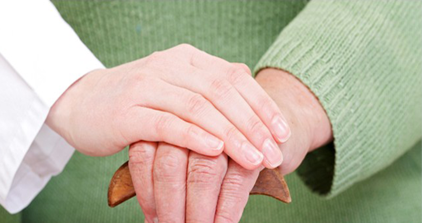
암완화의료 소개
WHO 정의에 따르면 완화의료란 암 진단 후부터 계속적으로 추구되어야
하는 바로서, 넓은 의미에서 지지치료, 재활의료, 암생존자에 대한 케어 등을
모두 포함하는 것을 말합니다.
현대의학은 질병의 완치에만 지나치게 초점을 맞춘 나머지, 고통의 완화에 대해서는 관심이 적은 편입니다.
그러나 암과 싸우는 과정에서 증상 및 암치료의 부작용으로 인해 환자와 가족분들은 많은 어려움을 겪게 됩니다.
이에 완화의료가 대두되었으며, 완화의료는 암 치료 중이나 치료가 끝난 이후 까지 제공됩니다. 또한 완치를 목표로 하는 환자와 완치를 목표로 하지 않는 환자 모두가 대상이 됩니다. 완화의료는 완치가 아닌 완화에 초점을 두는 전인적 의료로서, 환자의 몸과 마음의 편안함을 목표로 합니다.
현대의학은 질병의 완치에만 지나치게 초점을 맞춘 나머지, 고통의 완화에 대해서는 관심이 적은 편입니다.
그러나 암과 싸우는 과정에서 증상 및 암치료의 부작용으로 인해 환자와 가족분들은 많은 어려움을 겪게 됩니다.
이에 완화의료가 대두되었으며, 완화의료는 암 치료 중이나 치료가 끝난 이후 까지 제공됩니다. 또한 완치를 목표로 하는 환자와 완치를 목표로 하지 않는 환자 모두가 대상이 됩니다. 완화의료는 완치가 아닌 완화에 초점을 두는 전인적 의료로서, 환자의 몸과 마음의 편안함을 목표로 합니다.
일반적인 암치료와 완화의료의 차이점
일반적인 암 치료
궁극적으로 종양을 제거 하기 위한
치료방법입니다.
치료방법입니다.
완화의료
종양 자체에 대한 치료가 아닌 암으로 인해
유발되는 통증 및 여러가지 고통스러운
증상을 조절해주는 치료를 말합니다.
유발되는 통증 및 여러가지 고통스러운
증상을 조절해주는 치료를 말합니다.
성누가병원의 완화의료는 무엇을 제공하나요?
성누가병원은 완화의료 및 호스피스 운영에 경험이 있는 혈액종양내과 전문의가 진료하고 있습니다.
아쉽게도 아직 국가 완화의료전문기관은 아니어서, 말기 이전의 환자에게만 완화의료 제공이 가능합니다.
성누가병원에서는 통증 완화, 암치료의 부작용 치료, 우울증 치료, 영양보충과 면역강화를 위한 주사요법, 전인적
상담 등을 제공하고 있습니다. 또한 양한방 협진을 통해 맞춤형 치료를 하고 있습니다.
아쉽게도 아직 국가 완화의료전문기관은 아니어서, 말기 이전의 환자에게만 완화의료 제공이 가능합니다.
성누가병원에서는 통증 완화, 암치료의 부작용 치료, 우울증 치료, 영양보충과 면역강화를 위한 주사요법, 전인적
상담 등을 제공하고 있습니다. 또한 양한방 협진을 통해 맞춤형 치료를 하고 있습니다.
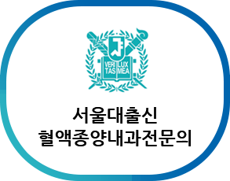
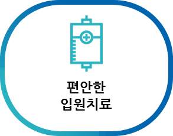
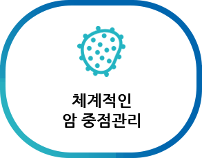
조기완화의료의 필요성
삶의 질 향상
생존기간연장
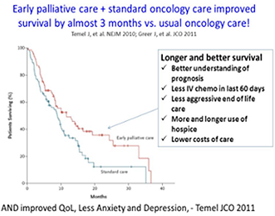
< 2010년 NEJM 발표 자료>
연구 결과에 따르면 폐암 환자에게 항암치료 초기부터 완화의료를 제공한 경우,
생존기간이 약 3개월 늘어나고, 삶의 질이 유의하게 좋아진 것으로 관찰되었습니다.
또한 완화의료를 제공받는 군에서 우울증이
감소하였고 말기 때 공격적인 치료를 받는 일도 더 적었습니다.
그러므로 암 환자에게 적절한 완화의료를
조기부터 제공할 경우, 삶의 질 향상과 생존기간 연장까지 기대할 수 있습니다.
생존기간이 약 3개월 늘어나고, 삶의 질이 유의하게 좋아진 것으로 관찰되었습니다.
또한 완화의료를 제공받는 군에서 우울증이
감소하였고 말기 때 공격적인 치료를 받는 일도 더 적었습니다.
그러므로 암 환자에게 적절한 완화의료를
조기부터 제공할 경우, 삶의 질 향상과 생존기간 연장까지 기대할 수 있습니다.
완화의료 치료의 흐름
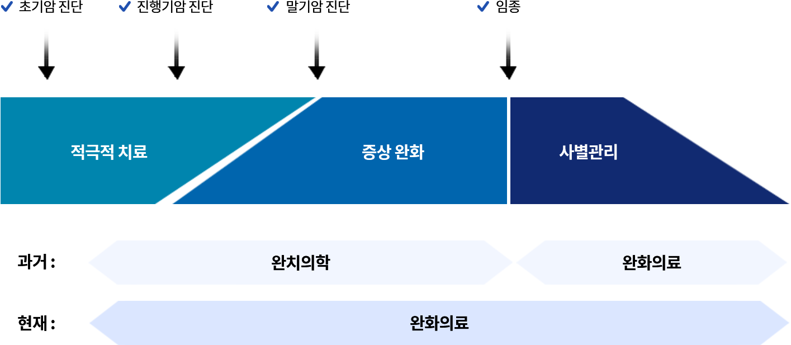
과거에는 완치의학이 끝나면 완화의료로 가는 식의 단절된 형태를 보였다면, 현재는 완치의학과 완화의학을 병행하고
환자분의 경과에 따라 완화의료로 이행되어 가는 방식으로 변화되고 있습니다.
환자분의 경과에 따라 완화의료로 이행되어 가는 방식으로 변화되고 있습니다.
암 통증 완화 치료
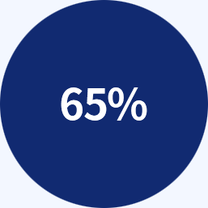
암 자체에 의한 것
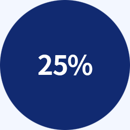
암치료와 관련된 통증
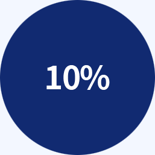
암 또는 치료와
관계없이 발생하는 통증
관계없이 발생하는 통증
통증 조절 방법
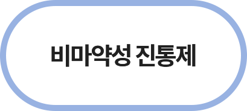
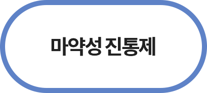
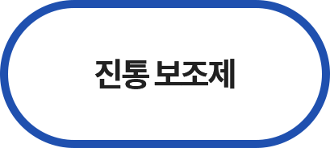
통증은 대부분 먹는 약으로 조절할 수 있습니다. 진통제는 먹는 약을 복용하거나 근육주사, 정맥주사로도 맞을 수 있고,
피부접착형 진통제를 사용하기도 합니다.
피부접착형 진통제를 사용하기도 합니다.
부종, 암 부작용 치료
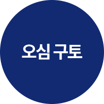
정서적으로 공포와 불안, 뇌종양으로 뇌압 상승, 항암제나 진통제 등의 약제와 위팽만, 장폐색, 변비 등으로 나타날
수 있습니다. 구토 원인에 따른 약물 치료가 가능합니다.
수 있습니다. 구토 원인에 따른 약물 치료가 가능합니다.
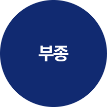
영양 결핍이나 간기능 저하로 알부민이 몸 속에서 잘 합성되지 못하거나, 혈관의 폐쇄가 있는 경우 등 여러 원인으로
부종이 생길 수 있습니다. 다리를 위로 올리거나 이뇨제, 알부민을 투여할 수 있습니다.
부종이 생길 수 있습니다. 다리를 위로 올리거나 이뇨제, 알부민을 투여할 수 있습니다.
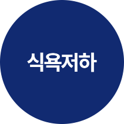
대부분의 암환자는 어느 정도의 식욕부진을 가지며, 그로 인해 몸이 쇠약해집니다.
원인으로는 약제, 구토에 대한 두려움, 위와 장의 이상 또는 변비, 황달, 불안과 우울 등이 있습니다.
스테로이드제 약물 투여와 함께 환자가 공복감을 느낄 때마다 소량씩 자주 식사하도록 합니다.
원인으로는 약제, 구토에 대한 두려움, 위와 장의 이상 또는 변비, 황달, 불안과 우울 등이 있습니다.
스테로이드제 약물 투여와 함께 환자가 공복감을 느낄 때마다 소량씩 자주 식사하도록 합니다.
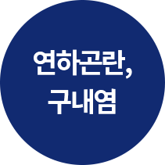
대부분의 암환자는 어느 정도의 식욕부진을 가지며, 그로 인해 몸이 쇠약해집니다.
원인으로는 약제, 구토에 대한 두려움, 위와 장의 이상 또는 변비, 황달, 불안과 우울 등이 있습니다.
스테로이드제 약물 투여와 함께 환자가 공복감을 느낄 때마다 소량씩 자주 식사하도록 합니다.
원인으로는 약제, 구토에 대한 두려움, 위와 장의 이상 또는 변비, 황달, 불안과 우울 등이 있습니다.
스테로이드제 약물 투여와 함께 환자가 공복감을 느낄 때마다 소량씩 자주 식사하도록 합니다.
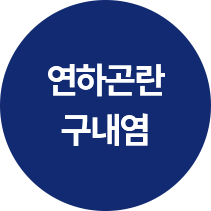
대부분의 암환자는 어느 정도의 식욕부진을 가지며, 그로 인해 몸이 쇠약해집니다.
원인으로는 약제, 구토에 대한 두려움, 위와 장의 이상 또는 변비, 황달, 불안과 우울 등이 있습니다.
스테로이드제 약물 투여와 함께 환자가 공복감을 느낄 때마다 소량씩 자주 식사하도록 합니다.
원인으로는 약제, 구토에 대한 두려움, 위와 장의 이상 또는 변비, 황달, 불안과 우울 등이 있습니다.
스테로이드제 약물 투여와 함께 환자가 공복감을 느낄 때마다 소량씩 자주 식사하도록 합니다.
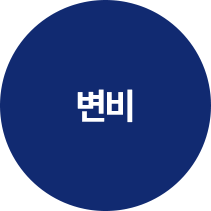
암환자는 육체적으로 쇠약하고 활동이 저하되며 음식 섭취가 어려워져서 대변을 밀어내는 힘이 약해져 변비가 생길
수 있습니다. 암환자가 대변을 잘 보는지 주의 깊게 관찰하고 육체적 활동을 권유하거나 경구약물 투여, 관장과 함께
입으로 적절한 양의 수분을 섭취하도록 하며 섬유성 음식을 섭취하게 합니다.
수 있습니다. 암환자가 대변을 잘 보는지 주의 깊게 관찰하고 육체적 활동을 권유하거나 경구약물 투여, 관장과 함께
입으로 적절한 양의 수분을 섭취하도록 하며 섬유성 음식을 섭취하게 합니다.
조기완화의료 대상자
1
통증 및 증상 경감을 위한 치료가 필요로 하는 분
2
항암 및 방사선 치료 부작용을 겪고있는 분
3
식욕촉진, 체중증가 유도 등의 삶의 질 개선이 필요한 분
4
항암치료 후 편안한 입원집중 치료가 필요한 분
5
면역력 증강이 필요한 분